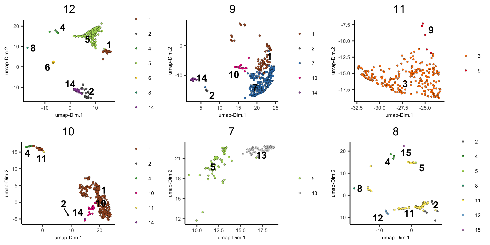
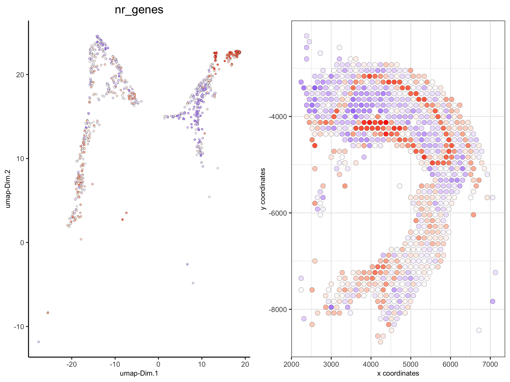

Source:
vignettes/subset_giotto.Rmd
subset_giotto.RmdHow to subset a Giotto object?
There are several ways to subset a Giotto object or visualize a subset of the data. Here we will use the already analyzed Visium 10X brain dataset object to:
- show how to visualize a subset of cells
- show how to visualize data by group (example clustering, layers in 3D images, …)
- subset the dataset based on cell IDs (cluster name(s) or individual cell IDs)
- subset the dataset based on spatial locations/coordinates
Figures may not be identical, because examples might have been updated, but the subsetting principles remain the same.
1. the Visium 10X whole brain
spatDimPlot(visium_brain, cell_color = 'leiden_clus',
plot_alignment = 'horizontal', spat_point_size = 2)
2. show only a subset of the clusters
spatDimPlot(visium_brain,
cell_color = 'leiden_clus', select_cell_groups = '4',
plot_alignment = 'horizontal', spat_point_size = 2)3. show only a subset of the clusters, excluding not selected cells
spatDimPlot(visium_brain,
cell_color = 'leiden_clus', select_cell_groups = '4', show_other_cells = F,
plot_alignment = 'horizontal', spat_point_size = 2)
4. create spatial plots grouped by the leiden clustering result
spatPlot(visium_brain,
group_by = 'leiden_clus', group_by_subset = c(1:8),
cell_color = 'leiden_clus', cow_n_col = 4,
point_size = 1, axis_text = 6, axis_title = 6, legend_text = 6)
5. create dimension plots grouped by the HMRF result
spatDimPlot(visium_brain, cell_color = 'HMRF_k12_b.1',
plot_alignment = 'horizontal', spat_point_size = 2)
dimPlot(visium_brain,
group_by = 'HMRF_k12_b.1', group_by_subset = c(1:6),
cell_color = 'leiden_clus', cow_n_col = 3,
point_size = 1, axis_text = 6, axis_title = 6, legend_text = 6)
dimPlot(visium_brain,
group_by = 'HMRF_k12_b.1', group_by_subset = c(7:14),
cell_color = 'leiden_clus', cow_n_col = 3,
point_size = 1, axis_text = 6, axis_title = 6, legend_text = 6)
6. Create a new Giotto object by subsetting selected clusters
metadata = pDataDT(visium_brain)
subset_cell_IDs = metadata[leiden_clus %in% c(4, 5, 8, 13)]$cell_ID
visium_brain_small = subsetGiotto(visium_brain, cell_ids = subset_cell_IDs)
spatDimPlot(visium_brain_small,
cell_color = 'leiden_clus',
plot_alignment = 'horizontal', spat_point_size = 2.5)
spatDimPlot(visium_brain_small,
cell_color = 'nr_genes', color_as_factor = F,
plot_alignment = 'horizontal', spat_point_size = 2.5)
7. Create a new Giotto object by subsetting based on spatial coordinates/locations
DG_subset = subsetGiottoLocs(visium_brain,
x_max = 6500, x_min = 3000,
y_max = -2500, y_min = -5500)
spatDimPlot(DG_subset,
cell_color = 'leiden_clus',
plot_alignment = 'horizontal', spat_point_size = 4,
save_param = list(save_name = '6_DG_loc_subset', base_height = 4))